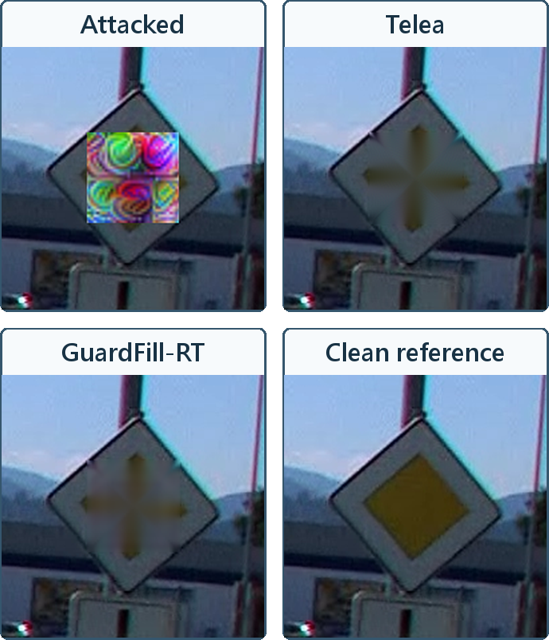

Faster R-CNN · 95% CI 78.8–89.0%
128 development cases · RTX 5070 Ti
Explore a fixed repair case
Archived outputs · predicted-mask comparisonCase DFGSHAPE_0003465, retained from the fixed E14 qualitative atlas. Compare the digitally occluded input, analytic Telea repair, APR repair and clean reference in the four-panel figure.

The panels are precomputed outputs from one retained predicted-mask case. Aggregate recovery above uses the predicted-mask route and whole-source-group weighting. Local inference with a caller-provided support mask is available in the Python package.
Reported six-method comparison
Faster R-CNN, predicted masks, 701 eligible final attack-caused failures. Case-weighted recovery and masked PSNR retain the paper's population and definitions.
Swipe to view recovery and PSNR →
| Method | Recovered / eligible | Recovery | Masked PSNR |
|---|
The larger learned comparators achieve higher recovery in this reported cohort. APR supplies a compact analytic-prior repair model with a separately measured memory and latency profile.
Loading the retained result table…
Research setting
Source-group-disjoint DFG traffic signs, a supplied sign ROI, and digital non-adaptive occlusion. Group-mean recovery uses 56 eligible Faster R-CNN source groups. The descriptive 95% interval resamples whole groups.
Latency: repair-only, batch 1, FP32, RTX 5070 Ti; 128 development cases from 57 groups. This viewer's browser interactions operate on retained outputs.
Dataset credit & reuse
DFG Traffic Sign Dataset · ViCoS Laboratory, University of Ljubljana · Domen Tabernik and Danijel Skočaj. Images provided and annotated by DFG Consulting d.o.o.
Example modifications: cropping, digital occlusion, repair and four-panel layout. Example shared under CC BY-NC-SA 4.0. Original dataset and publication ↗